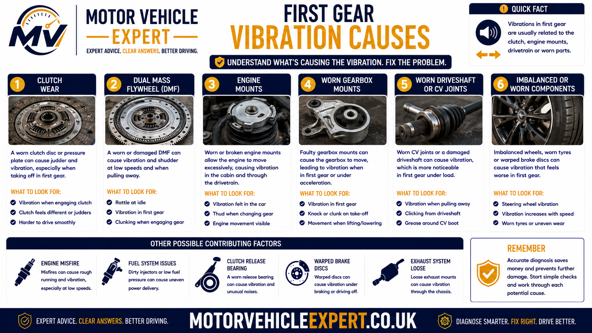
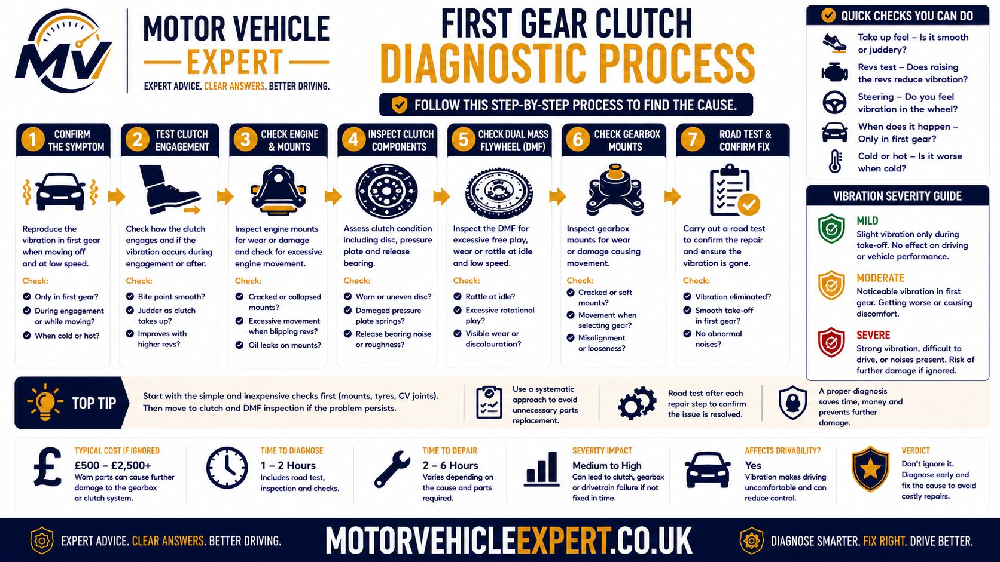
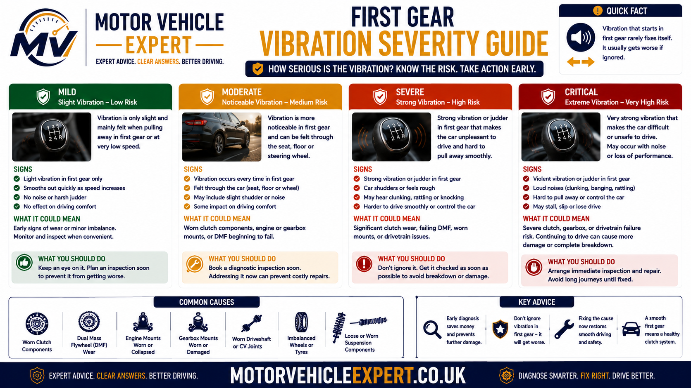
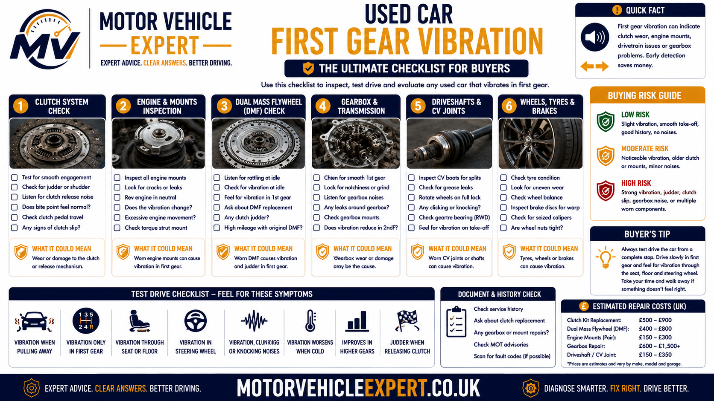

Why does a clutch vibrate in first gear?
First gear exposes clutch vibration because the vehicle is stationary while the clutch begins transferring engine torque into the gearbox. If the clutch plate grips unevenly, the flywheel moves excessively or the engine and gearbox are not controlled properly by their mountings, the resulting torque pulses can shake the body, pedals and gear lever.
The most common mechanical causes are a worn or glazed clutch plate, oil contamination, pressure plate distortion, excessive dual mass flywheel movement and weak engine or gearbox mounts. Engine misfire, unstable idle and incorrect clutch installation can create similar symptoms and must be ruled out before expensive parts are replaced.
Most likely causes
Uneven clutch friction, flywheel wear, oil contamination, weak mountings and poor clutch installation are among the main causes.
Why first gear is worse
The clutch must overcome the vehicle's stationary load while transferring high take-off torque, making small faults easier to feel.
Is it safe to drive?
Mild occasional vibration may allow limited driving, but severe shaking, burning smells, slip, knocking or unsafe pull-away requires prompt inspection.
Best next step
Record whether the fault changes in reverse, when cold or warm and under additional load, then inspect the clutch, flywheel, engine and gearbox mounts.
First establish whether the vibration exists only while the clutch is passing through its bite point. If the engine also shakes at idle or the vibration continues once the clutch is fully engaged, the original fault may not be inside the clutch assembly.
A clutch kit will not cure vibration caused by an engine misfire, damaged mounting, oil leak or unsuitable flywheel surface. Diagnose the complete clutch and powertrain system before authorising gearbox removal.
Use the Motor Vehicle Expert Diagnostic App to record whether the vibration occurs only in first gear, also appears in reverse, changes with temperature or is accompanied by smell, slip, noise or pedal changes. The app supports structured symptom reporting but does not replace a physical clutch and mounting inspection.
Symptoms of clutch vibration in first gear
First-gear clutch vibration is usually felt while the clutch pedal is moving through its bite point and the vehicle is beginning to move from rest. The shaking may pass through the body, seats, steering column, pedals or gear lever before reducing once the clutch is fully engaged.
The exact conditions matter. A fault that appears only when cold, only after the vehicle is hot, only uphill or mainly in reverse can point the diagnosis towards different clutch, flywheel, engine or mounting faults.
Vibration at the bite point
The shaking begins as the clutch starts gripping and usually reduces once the pedal is fully released. This strongly supports a take-up or powertrain movement fault.
Body shake when moving off
The vehicle may shudder through the floor, seats or dashboard as engine torque begins moving the stationary car.
Movement through the gear lever
A gear lever that moves sharply during take-up can indicate excessive engine or gearbox movement, although clutch and flywheel faults can also contribute.
First gear only
The car may feel normal in second gear and above because the clutch is already fully engaged and no longer passing through the controlled-slip phase.
Reverse also affected
Reverse changes the direction of drivetrain loading and can make worn mountings, clutch irregularity or flywheel movement more noticeable.
Worse on hills
Pulling away uphill requires more clutch torque. A weak clutch, damaged flywheel or worn mounting may therefore vibrate more under gradient and load.
Worse when cold
Moisture on the friction surfaces, cold engine behaviour or stiff mountings may make the first few pull-aways more noticeable.
Worse when hot
Glazed, contaminated or heat-damaged friction surfaces can engage less consistently after slow traffic, repeated starts or heavy clutch use.
Knock during engagement
A separate clunk or knock can indicate mount failure, excessive flywheel travel or driveline backlash rather than friction material alone.
True clutch take-up vibration usually follows the clutch pedal through its bite point. Vibration that continues at idle, under steady acceleration or at a particular road speed may come from the engine, wheels, tyres, driveshafts or another drivetrain component.
Repeated high-rev pull-aways, hill starts or prolonged clutch slipping can overheat the friction surfaces and turn a mild vibration into permanent clutch and flywheel damage.
Why first gear exposes clutch vibration
First gear is used while the vehicle is stationary and the clutch is required to connect a rotating engine to a gearbox and drivetrain that are initially not moving. The clutch must therefore slip briefly while engine speed and gearbox speed become matched.
During this period, engine torque is passing through the clutch while the vehicle's full stationary mass resists movement. Any uneven friction, flywheel movement or weak mounting is amplified before the vehicle gains momentum.
1. Vehicle is stationary
The tyres, gearbox output and road wheels are not moving while the engine and flywheel are already rotating.
2. Clutch reaches the bite point
The pressure plate begins clamping the clutch plate against the flywheel and torque starts entering the gearbox.
3. Take-off load rises
The clutch must overcome vehicle weight, tyre resistance, road gradient and drivetrain inertia.
4. Faults create torque pulses
Uneven grip or uncontrolled powertrain movement turns smooth torque transfer into repeated gripping, releasing and shaking.
Why the vibration often disappears after moving
Once the clutch is fully engaged, the flywheel, clutch plate and gearbox input shaft should rotate together. The controlled-slip phase has ended, so faults that mainly affect initial engagement may no longer create obvious vibration.
This is why a vehicle can shake badly in first gear but feel normal once it is travelling in second, third or higher gears. The apparent recovery does not prove the clutch or flywheel is healthy.
Why hills and heavy loads make it worse
A hill, trailer, full passenger load or heavy luggage increases the torque required to begin moving. More torque must pass through the clutch while it is still partially engaged, exposing wear and movement that may be less noticeable on level ground.
The fact that the vibration occurs in first gear does not mean first gear itself is damaged. The gear often reveals a clutch, flywheel, mounting or engine fault because it creates the highest normal take-off load.
Common causes of clutch vibration in first gear
First-gear vibration can originate from the clutch friction surfaces, flywheel, pressure plate, engine and gearbox mountings, hydraulic release system or engine operation. Diagnosis should consider the whole powertrain before the gearbox is removed.
Worn clutch plate
Uneven friction material, worn damper springs or reduced lining thickness can prevent progressive clutch engagement.
Likelihood: HighGlazed friction material
Excessive heat can harden and polish the clutch lining, making it grab, slip or vibrate as pressure is applied.
Likelihood: High after overheatingOil contamination
Engine or gearbox oil can make the clutch grip and release unpredictably as the plate rotates.
Likelihood: Medium to highPressure plate distortion
Heat damage or uneven diaphragm pressure can create inconsistent clamping force around the clutch plate.
Likelihood: MediumDual mass flywheel wear
Excessive internal travel, weakened damping or worn bearings can produce vibration and knocking during torque take-up.
Likelihood: Vehicle dependentSolid flywheel heat damage
Heat spots, scoring, cracking or excessive run-out can make an otherwise new clutch engage unevenly.
Likelihood: MediumWorn engine mount
A split or collapsed mounting allows the engine to twist excessively when torque is applied.
Likelihood: MediumWorn gearbox mount
A weak transmission mounting can allow gearbox lift, rotation or contact with surrounding components.
Likelihood: MediumHydraulic release irregularity
A master cylinder, slave cylinder or release mechanism fault can make clutch engagement inconsistent.
Likelihood: System dependentEngine misfire
Weak or uneven engine torque may become obvious only when the clutch loads the engine during pull-away.
Likelihood: Must be ruled outIncorrect clutch installation
Poor alignment, contamination, incorrect tightening or unsuitable components can create vibration immediately after repair.
Likelihood: Higher after recent workPoor clutch technique
Releasing the pedal abruptly, using too little engine speed or attempting to move off in the wrong gear can make a healthy vehicle shudder.
Likelihood: Driving dependent
The correct repair depends on identifying the component that creates uneven torque transfer. A clutch kit alone will not cure a failed mounting, engine misfire or unresolved oil leak.
A high-mileage vehicle may have a worn clutch, tired dual mass flywheel and weakened gearbox mounting at the same time. Correcting only one problem may reduce the vibration without eliminating it.
Worn or uneven clutch plate
The clutch plate carries friction lining on both sides and transfers engine torque into the gearbox input shaft. As the lining wears, it may become thin, glazed, cracked or uneven. The plate's internal damper springs can also weaken or loosen.
If one area of the clutch plate grips before another, the plate can twist, release and grip again. This repeated torque variation creates the vibration felt while moving away in first gear.
Supporting symptoms
High bite point, clutch smell, inconsistent engagement, judder in reverse and possible slip under heavy acceleration.
When it feels worse
Hills, towing, warm friction surfaces and repeated stop-start use often increase the vibration.
Likely repair
Gearbox removal and clutch kit replacement, with the flywheel, release system, oil seals and mounts inspected before reassembly.
A clutch can engage unevenly while still holding enough torque during normal driving. The absence of engine-speed flare does not rule out friction damage.
When engine revs rise without matching road speed, compare the symptoms with the clutch slipping symptoms guide .
Oil-contaminated clutch
The clutch friction surfaces must remain dry. Engine oil from a rear crankshaft seal or gearbox oil from an input shaft seal can enter the bellhousing and soak into the clutch lining.
Contaminated friction material may alternate between slipping and gripping as the clutch rotates. This can produce strong vibration in first gear, inconsistent take-up, burning smells and eventual clutch slip.
Rear crankshaft seal
Engine oil can leak from the rear of the crankshaft and spread across the flywheel and clutch assembly.
Gearbox input shaft seal
Gearbox oil may leak towards the centre of the clutch plate and contaminate the friction lining.
Clues that support contamination
- Vibration changes from one pull-away to another.
- The clutch sometimes grips sharply and sometimes slips.
- A hot friction or oily smell appears after manoeuvring.
- Clutch slip develops under heavier engine load.
- Oil is visible around the engine and gearbox joint.
- The fault returned after a clutch was replaced without repairing a leak.
Cleaning an oil-soaked clutch plate is not normally a reliable repair. The contamination source should be corrected and the affected friction components replaced.
For broader guidance on assessing oil leakage, see oil leak advisory explained .
Dual mass and solid flywheel faults
The flywheel provides the friction surface against which the clutch plate is clamped. It also helps smooth engine rotation. Any excessive movement, heat damage or surface irregularity can affect clutch take-up.
Dual mass flywheel wear
A dual mass flywheel uses internal springs and damping components. Excess movement or weakened damping can cause vibration, rattle and knocking as first gear takes up drive.
Solid flywheel surface damage
Heat spots, cracks, scoring or excessive run-out can prevent even clutch contact and may cause a new clutch to vibrate.
Supporting flywheel symptoms
- Rattle at idle that changes with clutch-pedal position.
- Knock during engine start-up or shutdown.
- Clunk when drive direction changes.
- Vibration through the gearbox or gear lever.
- First-gear vibration under high load.
- Previous clutch replacement without flywheel renewal.
Release bearings, gearbox bearings, mountings and engine faults can create similar noises. Flywheel movement and surface condition should be assessed against the correct vehicle-specific limits.
Engine and gearbox mounting faults
Engine and gearbox mounts support the powertrain while controlling vibration and torque movement. During a first-gear pull-away, the engine attempts to twist in the opposite direction to the drivetrain.
A split rubber mount, collapsed hydraulic mount or loose bracket may allow the engine or gearbox to move suddenly as the clutch begins gripping. The resulting rocking can feel almost identical to clutch judder.
Excessive engine movement
The engine may lift or rock noticeably as torque is applied.
Gear-lever movement
The gear lever may move forward, backwards or sideways during clutch take-up and throttle changes.
Knocking under load
A failed mount can allow the powertrain or exhaust to contact nearby bodywork or brackets.
Vibration at idle
Collapsed or hardened mountings may transmit engine vibration into the cabin even before the car begins moving.
Reverse worse than first
Reverse loads the mountings in the opposite direction and may expose damage that is less obvious in forward drive.
Movement after recent repair
Gearbox removal can disturb or expose weak mounts and incorrectly tightened brackets.
For the UK test implications of a badly deteriorated mounting, see can an engine mount fail an MOT?
Why a new clutch may vibrate in first gear
A correctly fitted clutch should engage smoothly. Persistent vibration after replacement may indicate that an associated fault was missed or that the clutch was contaminated, misaligned or installed with unsuitable components.
Flywheel reused in poor condition
A damaged solid flywheel or worn dual mass flywheel can cause a new clutch to vibrate immediately.
Contamination during fitting
Grease, engine oil, gearbox oil or dirty handling can reduce and destabilise friction.
Incorrect component application
A clutch kit that does not exactly match the engine, gearbox, flywheel or release system may engage poorly.
Pressure plate tightened unevenly
Incorrect tightening sequence or torque can distort the pressure plate and create uneven clamping.
Mounting disturbed
A loose or damaged engine or gearbox mounting can create vibration after gearbox removal.
Engine fault still present
A misfire or weak low-speed torque fault may have been mistaken for a clutch problem before replacement.
Severe or persistent first-gear vibration after clutch replacement should be documented and reported without unnecessary delay. Avoid repeated high-load testing that could overheat the new components.
For a broader post-installation fault guide, see clutch slip after replacement .
Clutch vibration vs engine vibration
A vibration that appears while moving away is often blamed on the clutch, but an engine that is misfiring, idling unevenly or producing weak low-speed torque can shake as soon as clutch load is applied. The key difference is whether the vibration is tied closely to clutch take-up or remains present outside the bite-point window.
Vibration follows the bite point
- The shaking peaks while the clutch is partially engaged.
- The symptom reduces once the pedal is fully released.
- First gear and reverse are usually the worst conditions.
- Hills and additional load make the vibration stronger.
- The engine may idle smoothly while stationary.
- Smell, slip or a high bite point may also be present.
Vibration remains after engagement
- The engine shakes while the vehicle is stationary.
- The vibration continues after the clutch is fully engaged.
- Acceleration is hesitant or uneven.
- The exhaust note may sound irregular.
- An engine warning light may be present.
- The symptom may appear in neutral when the engine is revved.
Checks that help separate the two faults
Idle-quality check
Allow the engine to idle in neutral with the clutch pedal both raised and depressed. Note any rough running, surging or vibration that exists before the vehicle moves.
Bite-point check
During a controlled pull-away, identify whether the shaking begins exactly as the clutch starts gripping and stops once engagement is complete.
Post-engagement check
Once the clutch is fully engaged, accelerate gently in the same gear. Continued hesitation or shudder increases suspicion of an engine or broader drivetrain fault.
Applying more engine speed may make the vehicle move away more smoothly, but it can mask weak low-speed torque or misfire while creating extra clutch heat.
For a wider comparison of engine and vibration faults, see car vibrates at idle and car juddering when accelerating .
First gear vibration vs reverse vibration
First gear and reverse both place high load through the clutch at low road speed, but they load the drivetrain in opposite directions. The difference between the two can help identify whether the dominant fault lies in the friction surfaces, flywheel or powertrain mountings.
Forward take-up vibration
Stronger vibration in first gear may support uneven clutch friction, a heat-damaged flywheel surface or a fault that becomes most obvious under normal forward torque loading.
Directional mounting movement
Stronger vibration in reverse can point towards engine or gearbox mounting movement because the powertrain is being twisted in the opposite direction.
What a mechanic compares
Vibration strength
The technician compares whether first or reverse produces stronger body shake at a similar engine speed and clutch position.
Gear-lever movement
A large directional movement through the gear lever can support a mounting or linkage concern.
Knock direction
A knock that appears only when torque direction changes can indicate mount movement or driveline backlash.
A worn clutch or flywheel can still behave differently in first and reverse. The directional pattern should guide the inspection rather than decide the repair by itself.
Cold vs hot first-gear vibration
Temperature can change clutch friction, engine operation and mounting behaviour. Comparing the first cold pull-away with operation after the vehicle has reached normal temperature provides useful evidence.
Cold-only vibration clues
- Moisture on the clutch friction surfaces
- Cold engine running unevenly
- Mountings becoming firmer at low temperature
- Different friction behaviour before components warm
- Symptom reducing after several normal pull-aways
Heat-related vibration clues
- Glazed or contaminated clutch lining
- Heat-damaged pressure plate or flywheel
- Judder after congestion or repeated starts
- Burning smell after manoeuvring
- Slip appearing as temperature rises
Compare normal cold and warm operation only. Repeated hill starts or holding the clutch at the bite point can damage the components and distort the original symptom pattern.
How a mechanic diagnoses first-gear clutch vibration
A professional diagnosis should move from symptom confirmation and external checks towards gearbox removal only when the evidence supports an internal clutch or flywheel fault. This protects the owner from replacing a clutch when the real cause is an engine-running issue or failed mounting.
1. Confirm the symptom
Establish whether the vibration occurs only in first gear, also in reverse and whether it changes with road gradient, load or engine speed.
2. Compare cold and warm
Note whether the first pull-away of the day differs from operation after normal driving.
3. Check engine operation
Assess idle quality, misfire symptoms, warning lights and whether the engine produces stable low-speed torque.
4. Inspect mountings
Examine engine and gearbox mounts, brackets and fasteners for collapse, separation, leakage and excessive movement.
5. Assess clutch operation
Check pedal travel, bite point, release quality, hydraulic fluid and abnormal release-bearing noise.
6. Listen for flywheel clues
Note rattles, knocks and vibration during idle, clutch-pedal changes, engine start-up and shutdown.
7. Check for contamination
Inspect the engine-to-gearbox joint for oil and review possible rear crankshaft or gearbox input seal leakage.
8. Remove the gearbox if justified
Inspect the clutch plate, pressure plate, flywheel, release system and accessible oil seals before agreeing the final repair.

The workflow narrows the fault area while protecting the clutch from repeated abusive testing.
Road-test method
Normal first-gear pull-away
Move away normally on level ground and note the pedal position, engine speed and duration of the vibration.
Controlled reverse comparison
Repeat in reverse in a safe location and compare vibration strength, gear-lever movement and noise.
Post-engagement check
Once the clutch is fully engaged, accelerate gently to determine whether the vibration remains.
External checks before gearbox removal
- Check engine idle stability and warning lights.
- Scan for engine-management faults where symptoms support it.
- Inspect engine and gearbox mounts under controlled conditions.
- Check clutch and brake-fluid reservoir level where shared.
- Inspect master and slave cylinder areas for leakage.
- Listen for release-bearing and flywheel-related noises.
- Check clutch disengagement and gear-selection quality.
- Inspect for oil leakage around the engine and gearbox joint.
- Review recent clutch, flywheel or mounting repair history.
- Confirm wheel or driveshaft vibration is not being confused with clutch vibration.
Record the first-gear, reverse, temperature and load conditions in the Motor Vehicle Expert Diagnostic App . A structured symptom history can help the technician reproduce the fault without repeatedly overheating the clutch.
Loading the drivetrain while the vehicle is restrained can be dangerous and can damage the clutch. It should only be carried out by a competent technician with sufficient space and safe vehicle control.
What different first-gear vibration patterns may indicate
Symptom patterns help prioritise the inspection but are not proof by themselves. The final diagnosis should combine road-test behaviour, external checks and internal component condition where dismantling is required.
| Vibration pattern | Fault areas to prioritise | Supporting checks |
|---|---|---|
| Only during clutch bite point | Clutch plate, pressure plate, flywheel | Compare first, reverse, cold and warm operation |
| Much worse in reverse | Engine mount, gearbox mount, driveline movement | Inspect directional powertrain movement and contact marks |
| Worse after heavy traffic | Glazed clutch, contamination, heat damage | Check smell, bite consistency and slip under load |
| Accompanied by idle rattle | Dual mass flywheel, release system, gearbox noise | Compare clutch pedal raised and depressed |
| Present at idle and while moving | Engine-running fault or mountings | Check misfire, warning lights and engine movement |
| Started after clutch replacement | Flywheel condition, contamination, installation, mounts | Review invoice and timing of symptom onset |
| Vibration plus engine-speed flare | Worn or contaminated clutch causing judder and slip | Controlled torque-holding assessment |
| Oil visible near bellhousing | Rear crankshaft seal or gearbox input seal | Trace the leak before replacement |
The pattern helps determine which checks should come next. It does not justify replacing the clutch without supporting mechanical evidence.
First-gear clutch vibration severity guide
The urgency depends on vibration strength, whether the vehicle can move away predictably and whether other symptoms suggest clutch, flywheel or mounting deterioration.

Judge the severity together with smell, slip, fluid leakage, pedal changes and abnormal mechanical noise.
Mild and occasional vibration
The shaking is light, the vehicle moves away predictably and there is no burning smell, slip, knocking, leakage or pedal change.
Record when it occurs and arrange inspection if it becomes more frequent or stronger.
Frequent or worsening vibration
The car shakes during most pull-aways, the symptom is worsening or it is accompanied by smell, high bite point, gear-lever movement or occasional knocking.
Book diagnosis promptly and avoid towing, heavy loads and repeated hill starts.
Severe or unsafe vibration
The vehicle shakes violently, cannot move away safely, produces smoke, loses drive or develops loud grinding or heavy knocking.
Stop in a safe place and arrange professional assistance or recovery.
Factors that increase urgency
- The vibration worsens rapidly over a short distance.
- A burning clutch smell appears.
- The engine revs rise without matching acceleration.
- The gear lever moves sharply during take-up.
- A heavy knock occurs during start-up or shutdown.
- The clutch pedal changes suddenly.
- Oil or hydraulic fluid is leaking.
- The vehicle cannot join traffic safely.
- The vibration began immediately after clutch replacement.
Severe vibration can deteriorate into clutch slip, flywheel damage or total loss of drive. Recovery is safer than waiting for the vehicle to become stranded in traffic.
Can you keep driving if the clutch vibrates in first gear?
Mild first-gear vibration does not always mean the clutch will fail immediately, but the decision to continue driving should be based on control, predictability and associated symptoms. A vehicle that cannot move away smoothly enough to join traffic safely should not be driven simply because the clutch still transmits some drive.
The safest approach is to separate a light, stable vibration from a fault that is worsening, producing noise, generating heat or causing loss of drive.
Mild and stable vibration
The shaking is light, the vehicle moves away predictably and there is no clutch slip, burning smell, fluid leak, abnormal pedal behaviour or loud mechanical noise.
Frequent or worsening vibration
The car shakes during most pull-aways, hill starts are becoming difficult or the fault is accompanied by occasional knocking, gear-lever movement, smell or inconsistent engagement.
Severe or unsafe behaviour
The vehicle shakes violently, surges unexpectedly, loses drive, produces smoke, leaks significant fluid or cannot move away with enough control to enter traffic safely.
Stop driving immediately if:
- The vehicle cannot pull away predictably or safely.
- The clutch suddenly begins slipping severely.
- Engine revs rise with almost no increase in road speed.
- A loud metallic grinding or heavy repeated knock develops.
- Smoke appears from beneath the bonnet or vehicle.
- A strong burning-clutch smell persists after stopping.
- The clutch pedal stays down or changes suddenly.
- Gear selection becomes difficult enough to affect control.
- A significant engine, gearbox or hydraulic-fluid leak is visible.
- The fault worsens substantially during one journey.
Increasing engine speed may make the pull-away feel smoother for a moment, but it creates additional clutch heat and can accelerate friction wear, flywheel damage and loss of drive.
Driving precautions before inspection
Avoid towing and heavy loads
Extra weight increases the torque required during take-up and can make a weak clutch or mounting fault deteriorate faster.
Use the parking brake on hills
Hold the car securely with the parking brake rather than balancing it on the clutch bite point.
Reduce repeated manoeuvring
Avoid unnecessary forward-and-reverse movements that repeatedly load and heat the clutch.
Stop if vibration increases
A sudden increase in shaking, smell or slip indicates that the fault is becoming more serious.
Continuing with severe vibration can damage the flywheel, pressure plate and mountings. Recovery may cost less than turning a contained fault into a complete clutch-and-flywheel repair.
Will clutch vibration in first gear fail an MOT?
Clutch vibration is not normally tested as a separate item during the standard UK MOT test. A vehicle does not automatically fail merely because it shakes while moving away in first gear.
However, related defects may still be relevant. Severely insecure engine or gearbox mountings, serious fluid leaks or another fault affecting safe control can influence the result. The vehicle must also be capable of being driven onto and off the test equipment safely.
First-gear vibration alone
Vibration during clutch take-up is not normally listed as a direct MOT failure item where no separate testable defect is identified.
Insecure engine mounting
A badly split, loose or insecure mounting may be relevant where it affects powertrain security or allows dangerous movement.
Insecure gearbox mounting
Excessive gearbox movement or a damaged mounting bracket may be relevant if component security is compromised.
Serious oil leakage
A substantial engine or gearbox oil leak may be assessed according to its location, severity and safety or environmental impact.
Hydraulic leak
A clutch hydraulic fault may become especially important where it shares fluid with the braking system or affects safe control.
Engine fault mistaken for clutch vibration
Warning lights, emissions faults or poor engine running may be assessed separately during the MOT.
Why passing an MOT does not prove the clutch is healthy
The tester does not remove the gearbox, inspect clutch lining thickness, measure flywheel movement or assess pressure-plate condition. A car can pass its MOT while still needing an expensive clutch, flywheel or mounting repair.
| Condition | Likely MOT relevance | Recommended action |
|---|---|---|
| Mild first-gear vibration with no other defect | Not normally a direct failure item | Arrange diagnosis despite any MOT pass |
| Clutch slip but vehicle remains driveable | Not usually measured as clutch wear | Repair before drive deteriorates |
| Severely insecure engine or gearbox mounting | May be a testable safety defect | Repair before presenting the vehicle |
| Significant engine or gearbox oil leak | May be recorded or fail depending on severity | Trace and repair the source |
| Vehicle cannot move safely | Test may not be completed safely | Recover and repair first |
| Engine-management fault causing rough running | Warning-light or emissions relevance possible | Diagnose engine and clutch symptoms separately |
Used-car buyers should assess the first-gear vibration directly. MOT validity does not guarantee that the clutch, flywheel or mountings are mechanically sound.
For the wider test position, read can a clutch fail an MOT? and can an engine mount fail an MOT?
Clutch vibration repair costs in the UK
Repair cost depends on whether the vibration comes from the clutch, flywheel, mountings, oil contamination, hydraulics or engine operation. A mounting repair may cost a few hundred pounds, while a clutch and dual mass flywheel replacement can exceed £1,500 on some vehicles.
These are broad UK planning estimates for 2026 rather than fixed quotations. Premium vehicles, four-wheel-drive systems, high-performance models and restricted gearbox access can cost more.
Road test and inspection
First and reverse comparison, engine checks, mounting inspection, pedal assessment and review of leaks and flywheel clues.
£60–£150Clutch kit replacement
Replacement clutch plate, pressure plate and release bearing or concentric slave cylinder where included.
£550–£1,100Clutch and dual mass flywheel
Replacement of the clutch kit and worn dual mass flywheel during the same gearbox-removal operation.
£900–£1,800+Engine mount replacement
Replacement of one engine mounting, including labour. Hydraulic or active mounts may cost more.
£180–£500Gearbox mount replacement
Replacement of a worn transmission or torque-reaction mounting.
£150–£450Rear crankshaft seal with clutch
Repair of a rear engine oil seal plus replacement of contaminated clutch components while the gearbox is removed.
£700–£1,400+Input shaft seal with clutch
Repair of a gearbox input-area oil leak and replacement of affected friction components.
£700–£1,500+Clutch master cylinder
Replacement and bleeding where inconsistent hydraulic control affects clutch engagement.
£180–£450External slave cylinder
Replacement of an externally mounted slave cylinder followed by hydraulic bleeding.
£150–£350Concentric slave cylinder
An internal slave cylinder requires gearbox removal and is normally replaced with the clutch.
£600–£1,200+Solid flywheel assessment
Inspection and, where suitable, resurfacing or replacement of a heat-damaged solid flywheel.
£150–£600 additionalPost-replacement diagnosis
Investigation of contamination, installation, flywheel condition or mounting issues after recent clutch work.
£0–£300 initial assessmentRequest the expected price for the likely repair and the maximum likely total if the flywheel, internal slave cylinder, oil seals or mountings are also found defective.
First-gear vibration repair decision table
| Diagnosis or finding | Likely repair | Broad UK estimate | Priority |
|---|---|---|---|
| Mild vibration with no confirmed defect | Road test and structured inspection | £60–£150 | Diagnose before replacing parts |
| One failed engine or gearbox mount | Replace affected mounting | £150–£500 | Prompt if movement is excessive |
| Worn clutch plate, flywheel serviceable | Clutch kit replacement | £550–£1,100 | High priority |
| Clutch and dual mass flywheel worn | Clutch kit and DMF replacement | £900–£1,800+ | Major repair |
| Oil-contaminated clutch | Repair leak and replace clutch | £700–£1,500+ | Repair source and damage together |
| Internal concentric slave cylinder fault | Slave cylinder and usually clutch | £600–£1,200+ | Avoid duplicate labour |
| Engine misfire mistaken for clutch vibration | Engine diagnosis and fault-specific repair | £80–£1,000+ | Correct engine fault first |
| Vibration after recent clutch replacement | Warranty inspection and installation review | Warranty dependent | Return promptly |
| Clutch wear plus multiple weak mounts | Combined clutch and mounting repair | £800–£1,600+ | Agree full scope before work |
What should the quotation include?
- The exact clutch kit brand and included components.
- Whether the release bearing or concentric slave cylinder is included.
- Whether the dual mass flywheel is included or priced separately.
- How the existing flywheel will be assessed.
- Whether gearbox oil replacement is included.
- Whether clutch hydraulic bleeding is included.
- Whether accessible oil seals will be inspected.
- Whether engine and gearbox mounts will be checked.
- The parts and labour warranty period.
- The process for approving additional work.
A low headline price may exclude the flywheel, slave cylinder, oil seals, gearbox oil or additional labour. Compare the full quotation and warranty rather than the first number alone.
For a wider price breakdown, see the UK clutch replacement cost guide .
Should you buy a used car that vibrates in first gear?
A used car that vibrates while moving away in first gear should be treated as having an unresolved mechanical fault until a competent inspection identifies the cause. The problem may be a relatively contained engine or gearbox mounting fault, but it can also involve the clutch, pressure plate, flywheel, oil contamination or poor workmanship following an earlier repair.
Do not accept a seller's claim that the vibration is normal, caused only by cold weather or simply requires different clutch technique without supporting evidence. A healthy manual car should move away predictably without violent shaking, persistent judder or excessive engine speed.
Confirmed low-cost fault
The vibration is mild, an independent inspection confirms one affordable mounting fault and the vehicle price leaves sufficient room for the repair.
Repair scope remains uncertain
The car drives normally after moving, but the clutch, flywheel, mountings and oil seals have not been assessed and there is no reliable repair history.
Severe vibration or additional symptoms
The vehicle shakes violently, slips, smells of burning clutch, knocks heavily, leaks oil or has recent clutch work that the seller cannot document properly.

Do not deliberately abuse a seller's clutch with aggressive hill starts, prolonged slipping or repeated high-load tests. Normal driving should provide enough evidence to justify further inspection.
Before starting the engine
Review the paperwork
- Look for an itemised clutch replacement invoice.
- Confirm the date and mileage of any clutch work.
- Check whether the flywheel was replaced or reused.
- Confirm whether the slave cylinder was renewed.
- Review engine and gearbox mounting repairs.
- Check the parts and labour warranty period.
Inspect the parked vehicle
- Confirm the engine is genuinely cold where possible.
- Look beneath the vehicle for fresh fluid leakage.
- Check the clutch pedal returns fully.
- Look for warning lights before start-up.
- Inspect the engine and gearbox joint where visible.
- Ask when the vibration was first noticed.
During the test drive
Normal first-gear pull-away
The clutch should engage progressively without strong body shake, excessive revs, a sudden grab or movement through the gear lever.
Reverse comparison
Compare reverse take-up in a safe location. Much stronger vibration in reverse may increase suspicion of mounting movement.
Cold and warm comparison
Note whether the vibration improves, remains stable or becomes worse after normal operating temperature is reached.
Acceleration after engagement
Once the clutch is fully engaged, engine speed and road speed should rise together without continued vibration or clutch slip.
Noise and gear-lever movement
Listen for flywheel rattle, shutdown knock, mounting clunks and abnormal release-bearing noise.
Smell after driving
A hot clutch smell after an ordinary test drive supports friction slip, glazing or contamination and increases the buying risk.
Questions to ask the seller
- When did the first-gear vibration begin?
- Is it worse when cold, hot, reversing or moving uphill?
- Does the clutch ever slip or smell burnt?
- Has the clutch kit been replaced previously?
- Was the flywheel replaced or reused?
- Were the rear crankshaft and gearbox input seals inspected?
- Have any engine or gearbox mounts been replaced?
- Is there an itemised repair invoice?
- Has a garage diagnosed the current fault in writing?
- Will the seller permit an independent inspection?
Clutch friction condition and flywheel wear are not fully assessed during an MOT. A vehicle can have a fresh certificate and still require an expensive clutch, flywheel or mounting repair.
Until the fault has been identified, allow for the possibility of a clutch kit, dual mass flywheel, internal slave cylinder and oil-seal repair rather than assuming the cheapest explanation.
Accept, negotiate or walk away?
The correct decision depends on symptom severity, documentary evidence, vehicle value and the amount of financial contingency available after purchase.
| Vehicle condition | Recommended decision | Reason |
|---|---|---|
| Mild vibration and one failed mount confirmed independently | Consider buying with repair allowance | The repair scope is supported by evidence |
| Mild vibration but no diagnosis or repair estimate | Negotiate heavily or pause | Clutch and flywheel condition remain unknown |
| Vibration plus clutch slip or burning smell | Usually walk away | Friction damage or contamination is likely |
| Vibration plus flywheel rattle or shutdown knock | Assume clutch and flywheel risk | The repair may exceed £1,000 |
| Severe shake and excessive engine movement | Require specialist inspection | Multiple mounting or drivetrain faults may exist |
| Fault began immediately after clutch replacement | Require warranty resolution first | Installation, flywheel or contamination problems may remain |
| Seller refuses independent inspection | Walk away | The financial risk cannot be assessed properly |
| Price reflects a complete clutch and DMF repair | Consider with additional contingency | Hydraulic, seal or mounting costs may still appear |
Pre-diagnostic first-gear vibration checklist
Accurate observations help a mechanic reproduce the fault without repeatedly overheating the clutch. Record the conditions clearly and avoid forcing the vehicle through aggressive tests.
Record when it happens
- First start of the day
- After the vehicle is warm
- First gear only
- Reverse as well
- Level road
- Uphill or under load
Record associated symptoms
- Burning smell
- Clutch slip
- Knocking or rattling
- Gear-lever movement
- Pedal change
- Warning lights
Record repair history
- Clutch replacement date
- Flywheel replacement date
- Mounting repairs
- Oil-leak repairs
- Hydraulic work
- Warranty details
Safe checks a driver can make
- Check whether the engine idles smoothly.
- Confirm the clutch pedal returns fully.
- Check whether gears select normally.
- Look beneath the vehicle for fresh fluid leakage.
- Listen during engine start-up and shutdown.
- Compare first gear and reverse only where safe.
- Record whether the fault changes after warming up.
- Retain invoices and photograph visible leaks.
- Stop testing if the vibration or slip worsens.
Record the conditions using the Motor Vehicle Expert Diagnostic App before arranging a physical inspection. The app can support structured fault reporting but cannot inspect the internal clutch or measure flywheel movement.
Checks to leave to a competent technician
- Loading the drivetrain while observing engine movement.
- High-load clutch slip testing.
- Working beneath a raised vehicle.
- Hydraulic pressure and release-travel testing.
- Removing the gearbox or starter motor.
- Measuring dual mass flywheel movement.
- Inspecting the clutch plate and pressure plate.
- Assessing flywheel run-out and heat damage.
- Replacing oil seals and bleeding the clutch system.
Clutch and gearbox diagnosis may require access beneath the vehicle. Correct lifting equipment, suitable support points and competent working practices are essential.
Clutch vibration in first gear: key takeaways
First gear exposes take-off faults
The clutch must overcome the vehicle's stationary load, making uneven friction and powertrain movement easier to feel.
The clutch is not the only cause
Flywheel wear, engine and gearbox mounts, oil contamination and engine misfire can produce similar symptoms.
Timing helps diagnosis
Vibration limited to the bite point supports a clutch-related fault, while vibration at idle or after engagement may point elsewhere.
Repair costs vary widely
A mounting may cost a few hundred pounds, while a clutch and dual mass flywheel repair can exceed £1,500.
An MOT pass proves little
Clutch and flywheel condition are not fully assessed during the standard UK MOT.
Used-car buyers need evidence
Obtain an independent inspection and price the credible complete repair before purchasing.
First-gear vibration should be diagnosed as a complete clutch and powertrain problem rather than blamed automatically on one component. Inspect the clutch, flywheel, mountings, hydraulics and engine operation before authorising expensive work.
Related clutch and vibration guides
Use these live Motor Vehicle Expert guides to compare first-gear vibration with clutch judder, slip, engine vibration, mounting faults and related used-car risks.
Clutch judder when pulling away
Diagnose broader clutch take-up vibration, flywheel faults, contamination and mounting movement.
Clutch judder guide →Car judders when pulling away
Compare clutch faults with engine, transmission and drivetrain causes of vehicle shake.
Pull-away judder guide →Clutch slipping symptoms
Understand engine-speed flare, poor acceleration and loss of clutch torque capacity.
Clutch slipping guide →Clutch slip in high gears
Learn why clutch slip commonly appears under heavy load in fourth, fifth or sixth gear.
High-gear clutch slip →Burnt clutch symptoms
Compare vibration with clutch overheating, smoke, smell and loss of drive.
Burnt clutch symptoms →Clutch burning smell
Separate clutch heat from brake, oil, rubber and electrical smells.
Clutch smell guide →High clutch bite point
Understand how wear, adjustment and hydraulic design affect clutch engagement position.
High bite point guide →Clutch noise when pressed
Compare release-bearing, pressure-plate, fork and gearbox noises.
Clutch noise guide →Clutch slip after replacement
Review contamination, installation, flywheel and component compatibility faults after repair.
New clutch fault guide →Car vibrates at idle
Compare first-gear clutch vibration with engine and mounting vibration present while stationary.
Idle vibration guide →Can an engine mount fail an MOT?
Understand the UK MOT relevance of damaged and insecure powertrain mountings.
Engine mount MOT guide →UK clutch replacement costs
Compare clutch kit, flywheel, slave-cylinder and labour costs.
Clutch replacement costs →Check service history
Learn how to verify maintenance records and previous clutch or flywheel work before buying.
Service history guide →Is 100k miles too much?
Assess mileage, maintenance history and repair risk on a higher-mileage used car.
High-mileage buying guide →Diagnostic App
Organise first-gear, reverse, temperature and load-related symptoms before arranging inspection.
Open the Diagnostic App →Clutch vibration in first gear FAQs
These visible answers match the FAQ structured data in the page head.
Why does my clutch vibrate in first gear?
Clutch vibration in first gear is commonly caused by uneven clutch engagement, worn or contaminated friction material, pressure plate distortion, excessive flywheel movement, weak engine or gearbox mounts, incorrect clutch installation or an engine-running fault that becomes noticeable under take-off load.
Is first-gear vibration always caused by the clutch?
No. Engine misfire, unstable idle, worn engine or gearbox mounts, driveshaft movement and flywheel faults can create vibration as the vehicle moves away. The timing and supporting symptoms must be checked before the clutch is condemned.
Why does the car shake only while moving off?
Moving off requires the clutch to transfer engine torque while the vehicle is stationary. Any uneven friction, flywheel movement or mounting weakness is most noticeable during this controlled-slip phase and may disappear once the clutch is fully engaged.
Can a dual mass flywheel cause first-gear vibration?
Yes. Excessive internal movement, weakened damping springs, worn bearings or heat damage in a dual mass flywheel can cause vibration, rattling or knocking as drive is taken up in first gear.
Can engine mounts cause vibration in first gear?
Yes. A worn engine mounting can allow excessive powertrain movement when torque is applied. This may feel like clutch vibration and can also cause knocking, vibration at idle or movement during gear changes.
Can gearbox mounts cause clutch vibration?
Yes. A damaged gearbox mounting can allow the transmission to lift, rotate or strike nearby components during clutch engagement, producing vibration through the body or gear lever.
Why is the vibration worse in reverse?
Reverse changes the direction of drivetrain loading and often uses a low gear ratio. This can expose worn mounts, driveline backlash, uneven clutch engagement or flywheel movement more strongly than first gear.
Why does the clutch vibrate more when cold?
Cold vibration can be caused by moisture on the friction surfaces, cold engine behaviour, changes in clutch material friction or mountings that become firmer at lower temperatures.
Why does first-gear vibration get worse when hot?
Heat can change the friction characteristics of a worn, glazed or contaminated clutch plate. A heat-damaged pressure plate or flywheel may also distort as temperature rises.
Can oil contamination cause first-gear judder?
Yes. Engine oil from a rear crankshaft seal or gearbox oil from an input shaft seal can contaminate the clutch plate. The friction surfaces may then grip and release unevenly, causing vibration, slip or burning smells.
Can a new clutch vibrate in first gear?
A new clutch can vibrate because of contamination, incorrect alignment, unsuitable components, an uneven flywheel surface, damaged mountings or installation errors. Severe or persistent vibration after replacement should be returned to the fitting garage.
Can poor clutch technique cause first-gear vibration?
Yes. Releasing the clutch too quickly, using too little engine speed or attempting to move away in the wrong gear can make a healthy car shudder. Repeated vibration despite smooth technique suggests a mechanical fault.
Is first-gear vibration the same as clutch slip?
No. First-gear vibration is shaking during clutch engagement, while clutch slip occurs when engine speed rises without a matching increase in road speed. A damaged or contaminated clutch can produce both symptoms.
How is first-gear clutch vibration diagnosed?
Diagnosis includes confirming when the vibration occurs, comparing first gear and reverse, checking the vehicle cold and warm, assessing engine operation, inspecting engine and gearbox mounts, checking the clutch hydraulics and looking for clutch or flywheel faults.
Can I keep driving if the clutch vibrates in first gear?
Mild and occasional vibration may allow limited driving, but worsening shaking, knocking, burning smells, clutch slip, fluid leakage or difficulty moving away safely requires prompt inspection.
Will first-gear clutch vibration fail an MOT?
Clutch vibration alone is not normally tested as a separate MOT item. Related defects such as insecure engine mountings, serious fluid leaks or another fault affecting safe control may still be relevant.
How much does first-gear clutch vibration cost to repair in the UK?
Repair costs depend on the cause. A mounting replacement may cost a few hundred pounds, while a clutch kit and dual mass flywheel replacement can exceed one thousand pounds on some vehicles.
Should I buy a used car that vibrates in first gear?
Treat noticeable first-gear vibration as an unresolved mechanical fault. Arrange an independent inspection, review clutch and flywheel history and obtain repair estimates before negotiating or purchasing the vehicle.